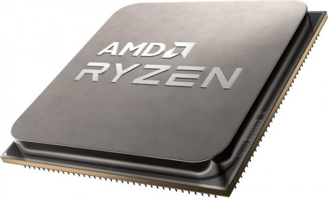

Procesor – serce każdego komputera
Procesor, znany też jako CPU (Central Processing Unit), to jeden z najważniejszych komponentów komputera. To on wykonuje wszystkie obliczenia i przetwarza polecenia, dzięki czemu komputer może działać. Procesory różnią się liczbą rdzeni – im więcej rdzeni, tym więcej zadań może być wykonywanych jednocześnie. Ważna jest też ich częstotliwość, wyrażana w gigahercach (GHz), która wpływa na szybkość działania. Współczesne procesory są bardzo zaawansowane technologicznie – posiadają własną pamięć podręczną, zarządzają poborem mocy i często mają zintegrowaną grafikę. Najpopularniejsi producenci to Intel i AMD. Dobór odpowiedniego procesora ma kluczowe znaczenie dla wydajności całego komputera – zarówno w codziennej pracy, jak i w grach czy programowaniu.
